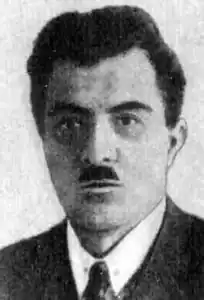

Кость Степанович Буревій (псевдоніми — Едвард Стріха, Кость Соколовський, Варвара Жукова, Нехтенборенг) народився 2 серпня 1888 року в селі Великі Меженки на Вороніжчині в українській родині. Формувався у російськомовному середовищі. Батько Костя — Степан Буревій — мав багато дітей і мало землі. Тому Кость зміг закінчити тільки сільську чотирирічку. Подальшу освіту здобував самотужки, переважно в тюрмі та на каторзі. К.Буревій став членом російської Партії соціалістів-революціонерів і дописувачем нелегальних російських есерівських газет вже в 15-літньому віці (Вороніж був визнаним центром есерівського руху, натомість інформації про діяльність українських політичних організацій на південну Вороніжчину майже не надходило). Під час першого заслання за революційну діяльність товариші К.Буревія по неволі (переважно студенти), що були в захопленні від таланту простого сільського парубка, допомогли йому підготуватися до гімназійного іспиту на атестат зрілості. Тоді ж він вивчив польську і французьку мови. Увесь час, що провів у місцях позбавлення волі, багато читав. Після другого заслання вчився на Вищих комерційних курсах у Петербурзі.
Буревій був активним діячем обох революцій — 1905 і 1917 років. 1905 р. вперше заарештований за звинуваченням в участі в аграрних заворушеннях. Арешт наблизив Костя до підпілля й до участі в замаху на воронізького генерал-губернатора. 1907 року Кость стає членом Острогорського повітового комітету ПСР. В 1911 р. вдруге заарештований Буревій сидить на лаві підсудних серед 300 селян. Вироком суду засланий в Олонецьку губернію на острів Большой Куганаволок. Із заслання їде не додому, а до Петербургу, де здає іспити на атестат зрілості й виконує відповідальну роботу в напівлегальній газеті "Мысль". В липні 1914 року — третій арешт. Спочатку Петербурзька тюрма, потім заслання на Єнісеї (Східний Сибір). Звідти К.Буревій тікає за допомогою Григорія Петровського (майбутній президент Радянської України). Красноярськ, Москва, і знову Петербург, де він стає організатором робітничого забезпечення — лікарень, страхкас, страйкових комітетів. Підпілля, постійна зміна паспортів, помешкань, прізвищ… Участь у підготовці замаху на Кабінет міністрів. Водночас Буревій навчається на вищих комерційних курсах. В жовтні 1916 року — четвертий арешт і заслання до Сибіру на 5 років. Довгі арештантські етапи, той самий Туруханський тракт і глуха сибірська тайга. Підготовку нової втечі "зірвала" лютнева революція 1917 р.
В березні К.Буревій по амністії повертається додому. З весни до осені 1917 р. Буревій знаходиться у Вороніжі, де виконує обов'язки голови ради робітничих солдатських і селянських депутатів, члена губкому ПСР, депутата Всеросійських установчих Зборів, члена бюро есерівської фракції Зборів. Четвертий з'їзд ПСР у грудні 1917 обирає його членом Центрального Комітету Партії Соціалістів-революціонерів. Він активно бореться проти більшовицької диктатури, стає одним з керівників повстання на Поволжі. В цей час Буревій працює в самарському комітеті "Установчих Зборів". У боротьбі з імперсько-реставраторськими нахилами ПСР Буревій з однодумцями організовує групу "меншість ПСР", яка проіснувала до 1922 р. В цей час Буревія вперше заарештовано органами ЧК. Переконавшись, що демократичні сили неспроможні протистояти диктаторському режимові "всеімперства", на межі 1922-23 рр. Буревій припиняє активну політичну діяльність. В цей період він закінчує книги "Колчаковщина", "Поэт белого знамени", "Распад". Певний час письменник працює редактором-економістом у "Сельхозсоюзе", звідки виходить на пенсію по інвалідності через туберкульоз кісток. Родину (дружину Клавдію і дочку Оксану) утримує тільки літературними гонорарами. У 1925 р. в "Червоному Шляху" з'являється уривок із його роману "Хами", а також нариси про життя чисельної української колонії в Москві, про Український клуб, про пов'язану з "Березолем" Українську театральну студію (в ній Кость Степанович викладав історію театру), про видавництво "Село і місто", в організації якого Буревій відіграв провідну роль. К.Буревій веде боротьбу за те, щоб уряд РСФСР узяв на бюджет культурні установи української меншини в Москві, як то зробив уряд України для російської меншини. 1925 року, далекий від справжнього розуміння українського питання, К.Буревій втрутився в літературну дискусію написавши книжку "Європа чи Росія", де виступив опонентом Хвильового, закидаючи останньому ідеалізацію Європи і недооцінку вартостей російської художньої літератури. Ця праця викликала рішучий протест Миколи Хвильового (див. його памфлет "Апологети писаризму"). Об'єктом безкомпромісної сатири Буревія стає панфутуризм, лідером якого був М.Семенко. Панфутуристи тоді виступали проти неокласиків і ваплітян, як "буржуазних націоналістів", ще з більшою затятістю, ніж партія. У пародійній "Зозендропії" Кость Буревій виводить міфічний образ Едварда Стріхи — тип радянського кар'єриста, що їздить дипкур'єром уряду СРСР по лінії Москва-Париж й пише ультраліві комуністично-футуристичні вірші. Цей персонаж поєднує в собі якості безпардонного нахаби й жалюгідного пристосуванця до вимог компартії, "обпльовувача" всіх цінностей і майстра самореклами. Цілковита порожнеча Е.Стріхи доповнюється страшенною галасливістю, примітивізм — претензією на ультрамодерну "європейськість", безмежний егоїзм та егоцентризм — великим бажанням робити революції і поліпшувати суспільство. Формально це була пародія на "комункультівський панфутуризм", фактично ж — сатирична пародія на більшовицький лад та пропаговану ним "пролетарську" літературу і критику. Свій твір автор підписав ім'ям літературного образу — Едвард Стріха. Цікаво, що М.Семенко повірив у те, що Едвард Стріха реальний футурист і дипкур'єр, а не вигаданий герой, і впродовж 1927-1928 років друкував у своєму журналі нищівні пародії на самого себе. З часом з під пера "Едварда Стріхи" з'являються й інші гострі сатиричні твори: театральні ревю для "Березоля": "Опортунія" (1930) та "Чотири Чемберлени" (1931). Останні твори не залишаються непоміченими в ЦК партії, і партійна критика починає методично розвінчувати відступника від партійної лінії — "Е.Стріху". Коли ж з'ясувалося, що Е.Стріхи, як такого, власне й не існує, К.Буревій, аби вивести з-під удару колег-журналістів, був змушений виступити з самокритичною заявою. Вона мала назву "Автоекзекуція" і її було підписано тим же псевдонімом — "Едвард Стріха". Так, в часи поголовної самокритики, з'являється пародія на неї. У драмі "Павло Полуботок" (закінчена 1928) висвітлено трагічний період в історії України, що настав після виступу гетьмана Мазепи проти колоніальної політики Московщини. Гетьман Полуботок, що намагався бути рівноправним союзником Москви, на очах царя помирає в петербурзькій тюрмі, проклинаючи московське віроломство: "О! Я тепер добре знаю, що воля міститься на кінці шаблюки!" В цих словах прозвучав висновок, який зробило ціле радянське покоління українців із свого найсвіжішого досвіду співпраці з більшовицькою Росією. Такого зухвальства Буревієві вибачити не могли. Його позбавлено всіх заробітків, а преса активно готує громадську думку до арешту письменника. У 1932-33 роках письменник марно намагається знайти роботу в Україні. Час від часу під псевдонімами "Варвара Жукова" або "Нахтенборген" йому вдається надрукувати якісь дрібні статті, а в шухлядах нагромаджуються нові праці про театр та драматургію, без надії на публікацію лежать "Мертві петлі. Тюремні мемуари". Пресинг влади та злидні стають аж надто відчутними, і у вересні 1934 р. Буревій залишає родину в Харкові та їде до Москви шукати заробітку і порятунку від арешту. В жовтні родина отримала від нього листа, а далі — мовчанка, перервана урядовим повідомленням, поміщеним у більшості радянських газет за 11 грудня про арешт української групи "терористів-білогвардійців". Тих самих "28", поміж яких, поруч з К.Буревієм, було згадано прізвища Олекси Влизька, Григорія Косинки, Дмитра Фальківського та інших. 13-15 грудня 1934 року виїзною сесією Військової колегії Верховного суду СРСР у Києві за звинуваченнями "в організації підготовки терористичних актів проти працівників Радянської влади" К.Буревія було засуджено до розстрілу. Вирок було виконано 15 грудня 1934 року. Літературна спадщина Костя Буревія: Зб. поезій — "Колчаковщина", "Поэт белого знамени", "Распад"; сатиричні та пародійні твори — "Хами" (1925), "Зозендропія", Опортунія" (1930), "Чотири Чемберлени" (1931), "Мертві петлі. Тюремні мемуари"; історична драма "Павло Полуботок"; монографії "Три поеми" (1931, про творчість П.Тичини, М.Семенка, В.Поліщука) й "Амвросій Бучма" (1933).